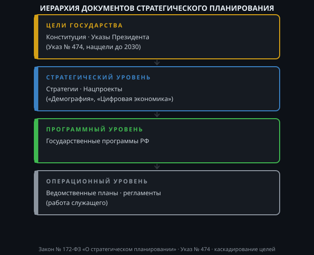

Вот проект статьи, подготовленный в соответствии с вашими требованиями.
Для государственного гражданского служащего стратегическое мышление — это не абстрактная способность видеть будущее, а конкретный навык работы с иерархией документов. Ошибка в исполнении тактической задачи часто происходит именно из-за неверного понимания стратегического контекста. В условиях российской системы управления этот контекст жестко формализован. Понимание того, как устроена «вертикаль целей», — базовая компетенция, определяющая качество планирования и эффективность работы каждого ведомства.
В Российской Федерации стратегическое планирование — это не право ведомства, а обязанность, закрепленная законодательно. Ядром системы является Федеральный закон «О стратегическом планировании в Российской Федерации» Федеральный закон от 28.06.2014 № 172-ФЗ «О стратегическом планировании в Российской Федерации». Этот закон определяет, что вся система госуправления выстраивается от целеполагания к прогнозированию, затем к планированию и программированию.
Для чиновника это означает, что любой документ — от ведомственного приказа до федерального проекта — должен быть звеном единой цепи. Если ваша текущая деятельность не способствует достижению показателя, зафиксированного в документе более высокого уровня, такая деятельность либо бесполезна, либо противоречит государственной политике. Задача служащего — уметь проследить эту связь: от глобальной национальной цели до конкретного пункта своего должностного регламента.
Система документов стратегического планирования (ДСП) многослойна. Знание этой иерархии позволяет корректно расставлять приоритеты при разработке ведомственных планов.
1. Конституционный уровень и послания. Стратегические ориентиры задаются в указах Президента Российской Федерации. Именно Указ Президента РФ от 7 мая 2018 года (так называемый «майский указ») и последующий Указ от 21 июля 2020 года стали основой текущей повестки. Последний закрепил национальные цели развития до 2030 года Указ Президента Российской Федерации от 21.07.2020 № 474 «О национальных целях развития Российской Федерации на период до 2030 года». Это фундамент: сохранение населения, комфортная среда, цифровая трансформация и т.д.
2. Стратегический уровень. Сюда относятся документы, конкретизирующие указы. Ключевую роль играют национальные проекты (например, «Демография», «Здравоохранение», «Цифровая экономика РФ»), которые реализуются во исполнение Указа № 474. Ниже находятся государственные программы. Важно понимать разницу: национальный проект — это инструмент достижения национальной цели, а госпрограмма — это инструмент реализации государственной политики в конкретной сфере актуальный перечень и статус государственных программ в увязке с нацпроектами.
3. Отраслевой уровень. Здесь, на уровне курируемого министерства или региона, принимаются отраслевые стратегии и территориальные схемы. Для рядового служащего это ближайший «нормативный горизонт», который он обязан знать наизусть.
Как использовать эту иерархию в повседневной работе? Алгоритм действий выглядит следующим образом:
Шаг 1. Идентификация «Материнской» цели. Возьмите план работы своего отдела и задайте вопрос: «Какое мероприятие национального проекта или госпрограммы мы обеспечиваем?» Если ответа нет, высока вероятность, что отдел работает «в стол».
Шаг 2. Проверка показателей. В любом стратегическом документе есть цели (формулировки) и целевые показатели (цифры). Ваша работа должна влиять на цифру. Например, если цель — «Увеличение доли граждан, систематически занимающихся спортом», то ваша задача как исполнителя — обеспечить ввод конкретного объекта или проведение мероприятия, влияющего на статистику. Если показатель не достигнут, это не абстрактная «неэффективность», а сбой в операционном управлении.
Шаг 3. Работа с «дорожной картой». Любой проект разбит на этапы. Сверяйте свою текущую деятельность не только с годовым планом, но и с планом-графиком (road map) исполнения соответствующего федерального проекта. Это помогает синхронизировать действия со смежными ведомствами.
На практике часто встречается разрыв между стратегией и тактикой. Документы целеполагания пишутся в «башне из слоновой кости», а исполнители на местах сталкиваются с бюрократическими процедурами (44-ФЗ, регламенты), которые не всегда укладываются в идеальные сроки стратегических планов. Задача госслужащего — не игнорировать этот конфликт, а управлять им.
Риск бюрократизации. Необходимо помнить, что написание «стратегических бумажек» ради галочки — главный враг стратегического мышления. Документ целеполагания — это не отчет о проделанной работе, а инструмент управления изменениями. Поэтому, разрабатывая ведомственный акт, всегда задавайте вопрос: «Какое решение и какое действие последует после того, как этот документ подпишут?»
Важность цифровой зрелости. Сегодня реалии госслужбы таковы, что управление целями все больше переводится в цифровую среду (система ГАС «Управление», ведомственная статистика). Умение работать с данными — часть стратегического мышления. Недостоверная отчетность искажает стратегическую картину наверху и приводит к принятию ошибочных решений на уровне правительства.
Стратегическое мышление для госслужащего — это умение видеть за своей операционной рутиной контур национальной цели. Освоение логики документов целеполагания (от Указа Президента до ведомственного плана) — это не требование делопроизводства, а профессиональная навигация. Служащий, который понимает, почему и для чего он выполняет задачу, действует эффективнее того, кто просто исполняет инструкцию. Изучение Федерального закона № 172-ФЗ и Указа № 474 — обязательная стартовая точка для выстраивания этой навигации.

← На главную